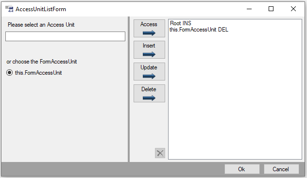

IsVisibleAU / IsEditableAU
Die Control-Eigenschaften IsVisibleAU und IsEditableAU stellen jeweils eine Liste von AccessUnit Objekten verknüpft mit je einem AUPermissionType dar. Für jeden dieser Listeneinträge wird bei der Initialisierung der Form-Controls mit Hilfe der Methode IGlobalObjects.AUHelper.Granted(AccessUnit, AUPermissionType) geprüft, ob der Zugriff gewährt wird. Falls dies bei keinem der Einträge zutrifft und die Liste nicht leer ist, so wird das entsprechende Control unsichtbar (bei IsVisibleAU) bzw. kann nicht bearbeitet werden (bei IsEditableAU). Wenn das Property IsVisible bzw. IsEditable bereits auf false gesetzt wurde, haben die Properties keine Auswirkungen.
Eine spezielle Access Unit ist die FormAccessUnit. Sie ist, worauf der Name bereits hinweist, dem Form zugeordnet. Im Fall von IsVisibleAU und IsEditableAU ist die äußerste Spezialisierung in der Vererbungskette relevant.
Wird eine Eigenschaft in einem vererbten From oder im Customizing überschrieben, so wirken die Listeneinträge als wären sie mit denen aus der Basis vereinigt.
Warning
Bei kritischen Aktionen sollte weiterhin eine Prüfung der Access Units auf funktionaler Ebene erfolgen.
Controls könnten durch Überschreibungen von IsVisibleAU/ IsEditableAU oder den Actions SetVisible(bool)/SetEnabled(bool) sichtbar bzw. zugänglich gemacht werden.
Der Dialog zum Festlegen der Properties IsVisibleAU und IsEditableAU, der beim Klick auf den  Button im Property Grid erscheint, zeigt links eine AccessUnit-Textbox und die FormAccessUnit zur Auswahl an.
Rechts sind die in der Liste enthaltenen Access Units.
Die in der Mitte befindlichen Buttons fügen eine im linken Bereich ausgewählte AccessUnit aus der Textbox oder die FormAccessUnit ein (Alle Buttons mit diesem Pfeil:
Button im Property Grid erscheint, zeigt links eine AccessUnit-Textbox und die FormAccessUnit zur Auswahl an.
Rechts sind die in der Liste enthaltenen Access Units.
Die in der Mitte befindlichen Buttons fügen eine im linken Bereich ausgewählte AccessUnit aus der Textbox oder die FormAccessUnit ein (Alle Buttons mit diesem Pfeil:  ).
Eine selektierte AccessUnit auf der rechten Seite kann über den Button
).
Eine selektierte AccessUnit auf der rechten Seite kann über den Button  entfernt werden.
entfernt werden.
Dialog zur Bearbeitung von IsVisibleAU/IsEditableAU
